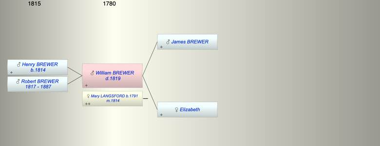

| [Index] |
| William Solomon BREWER ( - 1819) |
|  |
| m. 22 May 1814 Mary LANGSFORD (1791 - ) at Exminster |
| d. 14 Mar 1819 at Exminster |
| Near Relatives of William Solomon BREWER ( - 1819) | ||||||
| Relationship | Person | Born | Birth Place | Died | Death Place | Age |
| Father in Law | John LANGSFORD | 1753 | Shillingford St George | 1852 | Exminster | 99 |
| Father | James BREWER | |||||
| Mother | Elizabeth | |||||
| Self | William Solomon BREWER | 14 Mar 1819 | Exminster | |||
| Wife | Mary LANGSFORD | 1791 | Exminster | |||
| Son | Henry BREWER | 25 Mar 1814 | ||||
| Son | Robert BREWER | 03 Nov 1817 | 1887 | 70 | ||
| Daughter in Law | Elizabeth BERRY | |||||
| Niece | Ann LANGSFORD | |||||
| Nephew | William LANGSFORD | |||||
| Niece | Ann Maria LANGSFORD | 1824 | Alphington | 1900 | Croydon | 76 |
| Sister in Law | Ann LANGSFORD | 1784 | Exminster | |||
| Brother in Law | John LANGSFORD | 1788 | Shiilingford St George | |||
| Brother in Law | WIlliam LANGSFORD | 1788 | Alphington Exeter | |||
| Brother in Law | Thomas LANGSFORD | 1794 | Exminster | 1876 | Alphngton | 82 |
| Events in William Solomon BREWER ( - 1819)'s life | |||||
| Date | Age | Event | Place | Notes | Src |
| William Solomon BREWER was born | Note 1 | ||||
| 25 Mar 1814 | Birth of son Henry BREWER | ||||
| 22 May 1814 | Married Mary LANGSFORD (aged 23) | Exminster | Note 2 | ||
| 03 Nov 1817 | Birth of son Robert BREWER | ||||
| 14 Mar 1819 | William Solomon BREWER died | Exminster | Note 3 | ||
| Created on a Mac™ using iFamily for Mac™ on 15 Sep 2023 |